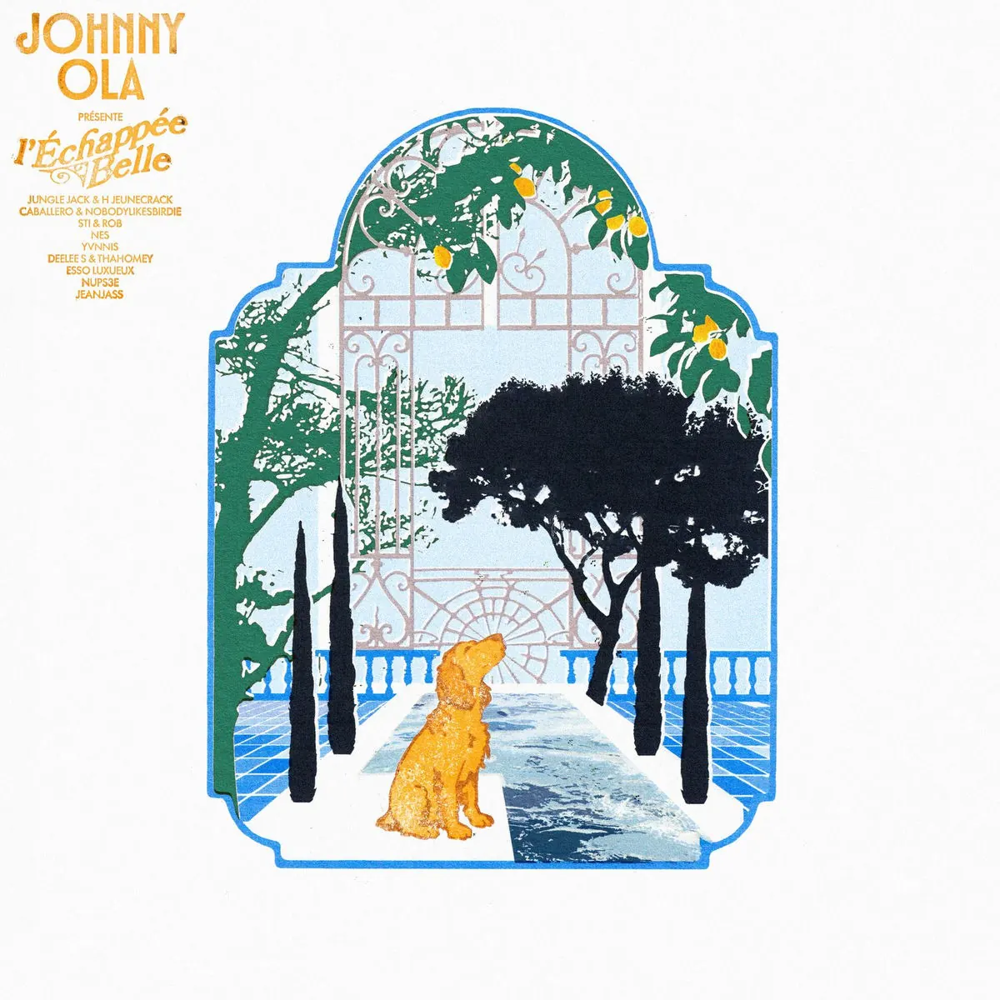

Publié le 31 octobre 2026

Le 16 octobre 2026, le producteur Johnny Ola a sorti son projet L'Échappée Belle. La première piste, Session Shooting, réunit les rappeurs H JeuneCrack et Jungle Jack sur une production millimétrée.
Cette collaboration met en lumière les circuits d'auto-production qui structurent la création indépendante. En associant deux artistes aux univers affirmés, le morceau pose les bases d'un disque résolument tourné vers le collectif.
Pourquoi la connexion entre Jungle Jack et H JeuneCrack fonctionne-t-elle ?
Sur le titre Session Shooting, la complémentarité entre Jungle Jack et H JeuneCrack repose sur des écritures denses. Jungle Jack apporte une scansion directe et un sens des images brutes. H JeuneCrack enchaîne avec des lignes au second degré et un découpage très technique.
Les deux rappeurs partagent un ancrage fort dans l'indépendance créative. Leur présence sur la même ligne de basse signée Johnny Ola témoigne des liens étroits qui unissent la nouvelle scène alternative. L'alchimie reste fluide tout au long des trois minutes du morceau.
Ce type de rencontre évite les calculs commerciaux. Les artistes privilégient la spontanéité du studio et le plaisir de kicker ensemble.
Comment s'articule le projet L'Échappée Belle de Johnny Ola ?
Publié sous le label Johnny Ola Records, le projet compte neuf morceaux pour une durée totale de 24 minutes. Johnny Ola orchestre l'ensemble des compositions et assure le mixage.
Chaque piste accueille un ou plusieurs invités issus d'horizons variés. On y croise notamment NeS, Yvnnis, Caballero, JeanJass ou Esso Luxueux. Le format court empêche les longueurs et préserve une dynamique constante.
Le choix d'ouvrir le disque avec Session Shooting fixe un cap rythmique élevé dès l'introduction. Le morceau donne une direction claire à l'ensemble du projet.
| N° | Titre | Invités | Durée |
|---|---|---|---|
| 1 | Session Shooting | Jungle Jack, H JeuneCrack | 3:02 |
| 2 | Célèbre Junkie | Caballero, Nobodylikesbirdie | 3:13 |
| 3 | Hennessy XO | STI, rob | 3:12 |
| 4 | R2 | NeS | 1:53 |
| 5 | Place Vendôme | Yvnnis | 2:42 |
| 6 | Airbnb | DEELEE S, thaHomey | 2:38 |
| 7 | Cécile de France | Esso Luxueux | 2:24 |
| 8 | Problèmes | NUPS3E | 2:49 |
| 9 | Diamantaire Anversois | JeanJass | 2:22 |
Quelle dynamique anime la scène indépendante actuelle ?
La sortie simultanée de projets portés par des artistes comme Ruthee ou Johnny Ola confirme la vitalité des circuits parallèles. Ces musiciens construisent leur audience en dehors des modèles traditionnels de l'industrie.
Cette autonomie permet une liberté totale dans le choix des collaborations. Les échanges se font au feeling, sans impératif de format ni contrainte de calendrier imposée par un tiers. Les auditeurs retrouvent cette authenticité dans les morceaux diffusés chaque semaine.
Comme nous le soulignions dans notre sélection des artistes émergents d'octobre 2026, cette vitalité renouvelée nourrit l'ensemble des circuits indépendants du rap underground.